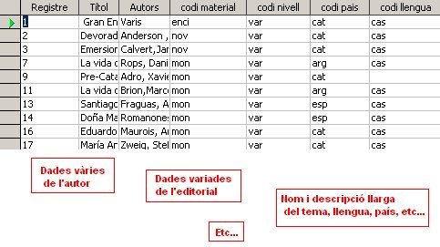
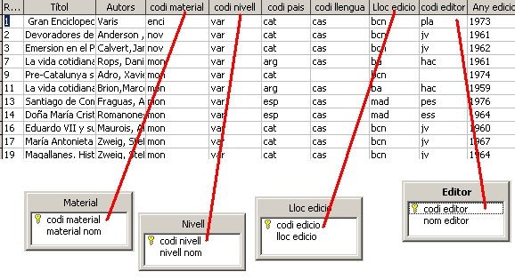

En aquesta pràctica:
La filosofia de treball, tot i semblar contradictòria a primer
cop d'ull, és la de crear diferents taules petites enlloc d'una gran
taula tradicional. La necessitat de treballar d'aquesta requerirà una
explicació detallada.
Ens trobem amb unes preguntes inicials que ens poden venir al cap, i que en les línies següents es procurarà donar resposta.
Doncs bé, intentem donar resposta a aquestes preguntes, que ens servirà
per explicar els conceptes bàsics de les bases de dades relacionals.
Ara ja sabem què és una taula, oi? Doncs per ajudar-nos en
l'explicació utilitzarem l'exemple de la biblioteca començat en el
primer mòdul. Així, tal com es va comentar en el mòdul 1, una taula és
un llistat d'informació disposat en files i columnes, essent cada fila
un registre (les dades d'un sol llibre) i cada columna, un camp (les
dades dels autors dels llibres).
Partint d'aquesta idea, en la taula llibres
hi posarem les dades relatives als llibres, i serà la taula central de
totes, doncs representa la informació principal. Però també voldrem
posar altra informació, potser no tant important, però sí també
necessària. Per exemple, voldrem saber dades dels autors de cada
llibre, de l'editorial, del tema, etc. i d'altres aspectes que ens
podrien ser útils.
Per tant, imaginem que quan volem donar d'alta un llibre nou haguessim
de donar d'alta cadascun d'aquests aspectes. Seria molt llarg i costós,
doncs cada cop caldria escriure dades com aquestes:

Si tenim la necessitat de donar d'alta un segon, un tercer,etc.
llibre del mateix autor, això ens obligaria a introduir les dades del
mateix autor diverses vegades. També ens passaria igual amb les
editorials, ens obligaria a teclejar cada cop que donessim d'alta un
llibre de l'editorial totes les seves dades. I el mateix amb el tema.
Per evitar-ho, es va pensar en compartirmentar la informació, és a dir,
crear diferents taules amb contingut específic. Així, totes les dades
completes de:
I ja només ens quedarà disposar en cadascuna d'elles un camp comú que compartiran entre elles i la taula central Llibres.
Aquest camp serà un tipus codi, que ocuparà poc espai i permetrà
establir la relació entre la taula Llibres i cadascuna de les altres
taules esmentades.
Fent això guanyarem:
Per tant, si mirem la següent imatge podem veure que les dades d'aquest
autor, d'aquesta editorial i d'aquest tema només les caldrà escriure un
sol cop en la nostra base de dades, i després, cada cop que utilitzem
aquestes dades en la taula Llibres, només caldrà escriure el seu codi,
és a dir, 1, i no les descripcions llargues de cadascun dels camps:
codi nivell, codi material, codi llengua, etc.

Veient tota aquesta explicació, podem pensar que és molt
complicat haver de treballar d'aquesta forma. Potser si, però això
només és al començament, un cop feta l'estructura de relacions entre
taules, la feina serà molt més fàcil i còmoda. Primer es tracta
d'agafar el concepte, sense preses, i deprés ja podrem posar-nos a
treballar amb el programa.
Ara que hem fet la justificació de la necessitat de les
relacions, anirem un pas més enllà, com es fan? Això ho tractarem en la
següent pràctica.

|
|

|
|